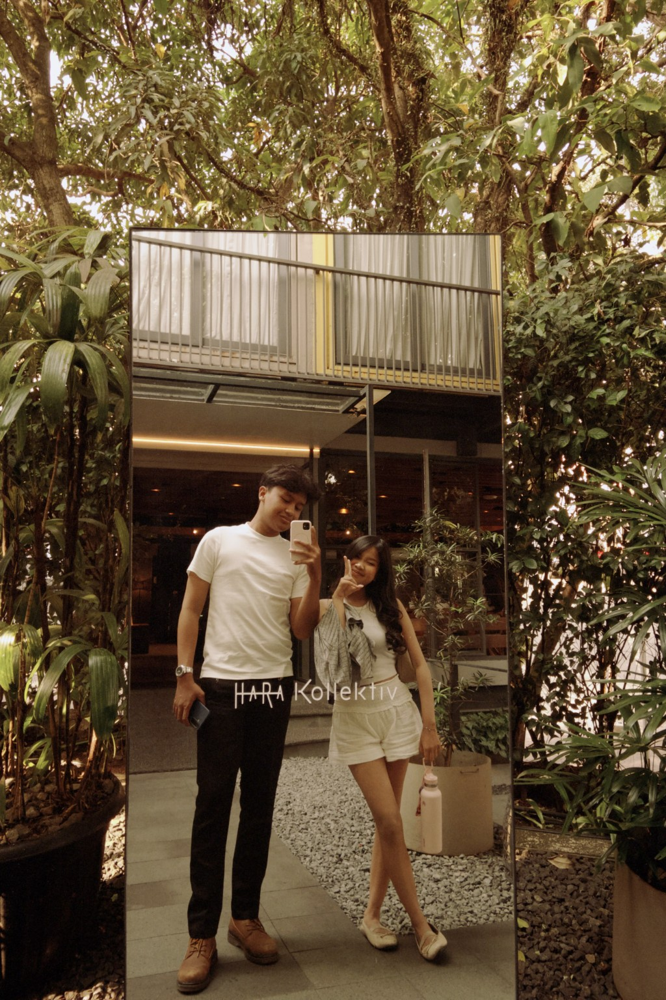
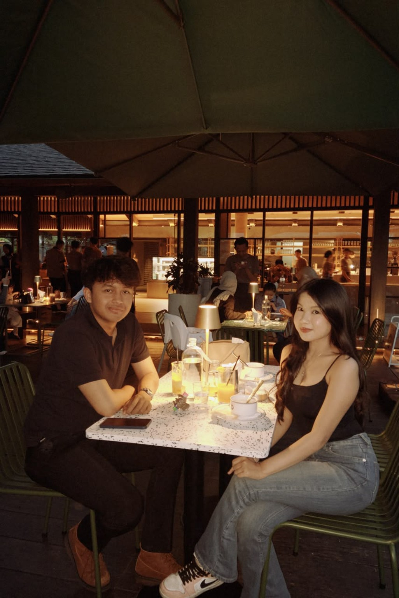
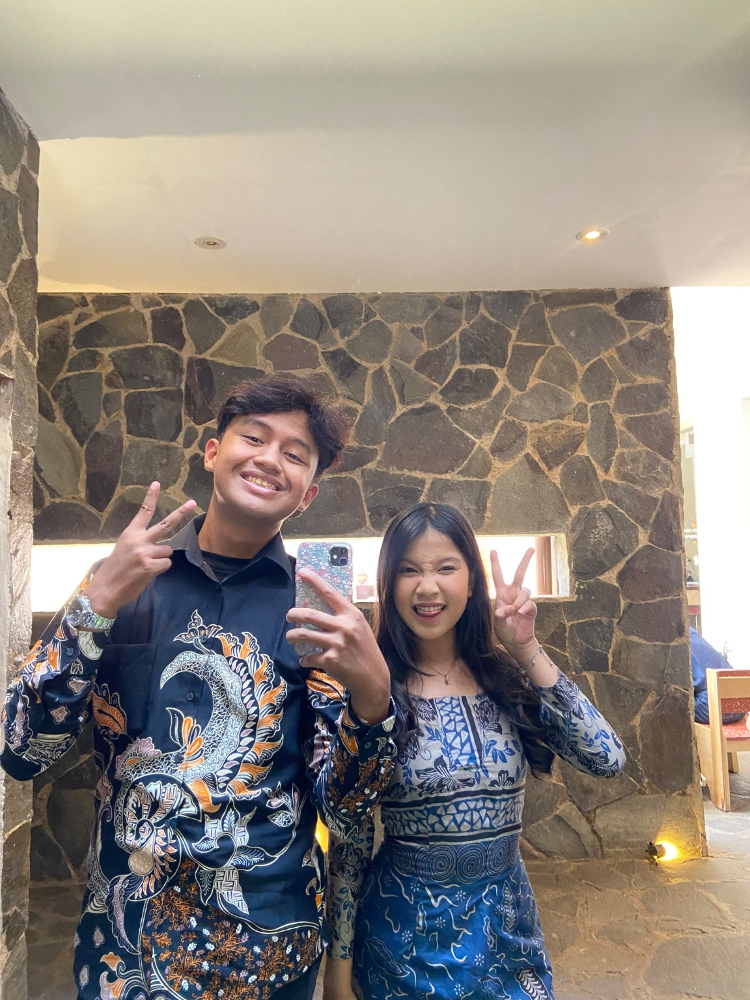
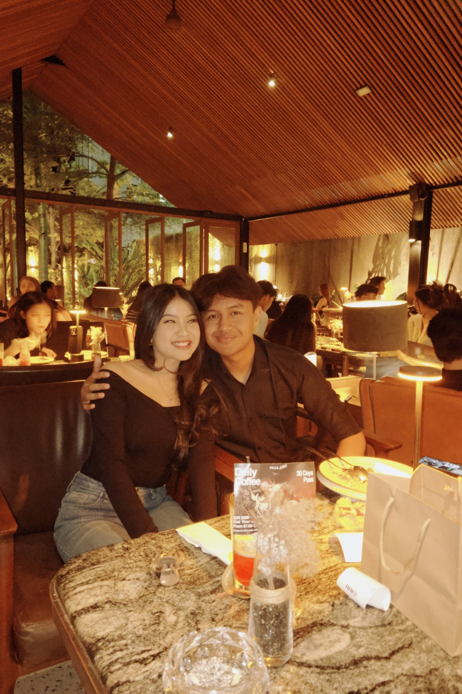
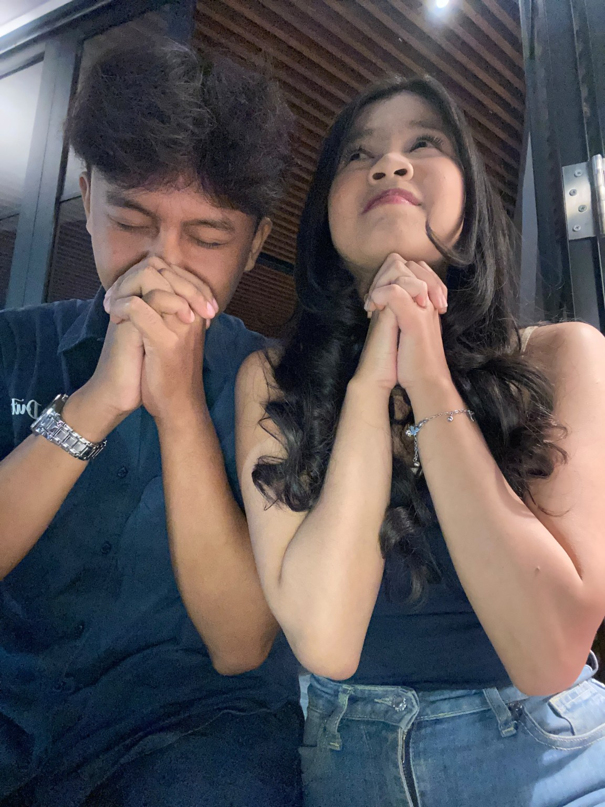
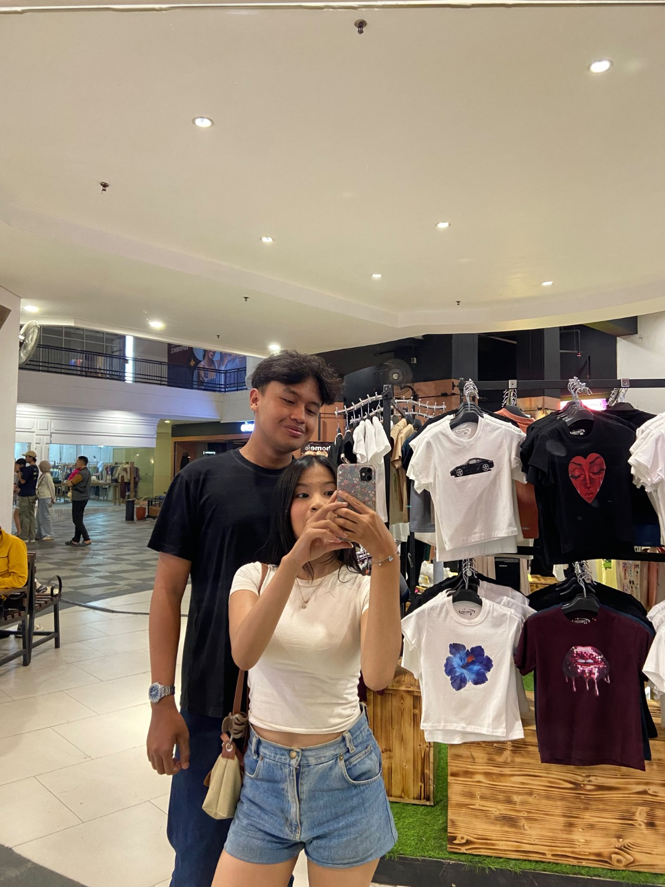
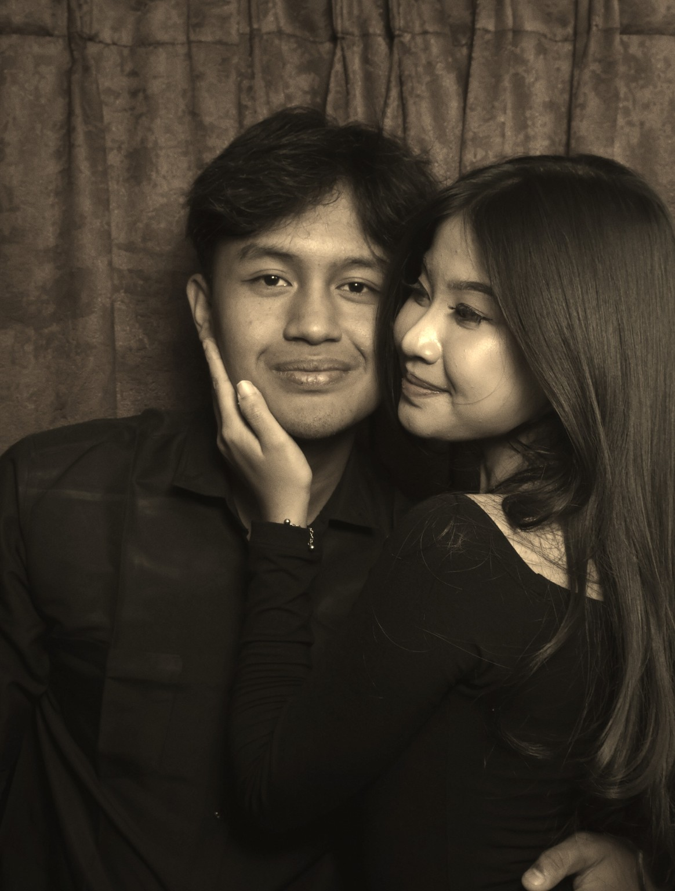
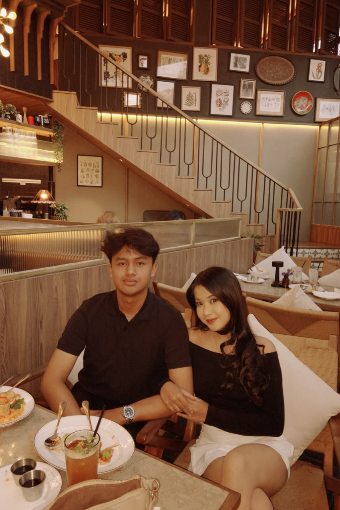
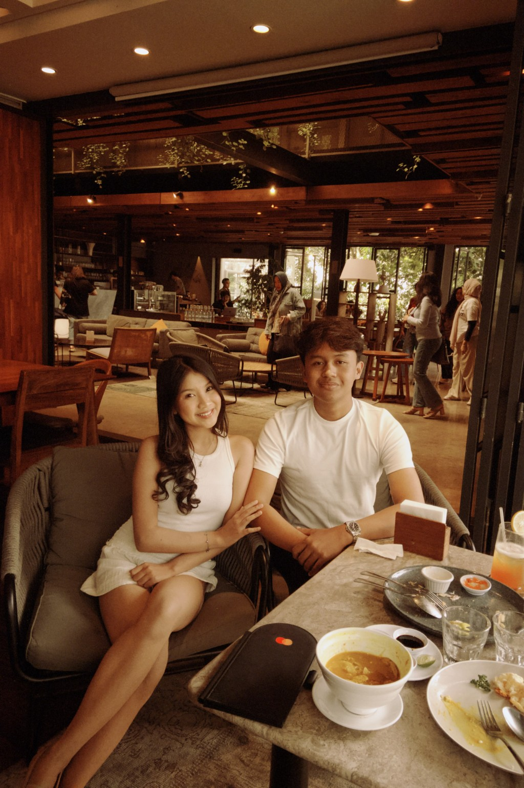

untuk kamu
Ada sesuatu
yang mau aku sampaikan.
scroll pelan-pelan ↓
01 / aku sadar
Aku pernah bikin kamu terluka.
Aku pernah melakukan sesuatu yang seharusnya gak aku lakukan. Aku selingkuh, dan aku tahu gak ada alasan yang bisa bikin kesalahan itu jadi benar.
Aku sadar yang rusak waktu itu bukan cuma hubungan kita, tapi juga rasa percaya kamu ke aku.


02 / tentang rasa sakit
Aku ngerti kalau kata maaf gak langsung menghapus semuanya.
Aku gak berharap kamu bisa langsung lupa. Aku juga gak mau pura-pura kalau semuanya baik-baik aja.
Kalau luka itu masih ada, aku ngerti.
“Aku gak mau kita terus menghitung
siapa yang paling banyak menyakiti siapa.”



03 / aku ngerti
Ketika kamu melakukan hal yang sama, aku juga ngerasain sakitnya.
Dan dari situ aku sadar, mungkin itu yang selama ini kamu rasain waktu aku melakukan kesalahan itu ke kamu.
Tapi aku gak mau hubungan kita berubah jadi tempat buat saling balas luka. Kita gak perlu terus saling menghukum untuk kesalahan yang udah terjadi.

04 / yang aku mau
Aku gak minta kamu langsung percaya lagi.
Aku cuma mau punya kesempatan buat nunjukin lewat tindakan, bukan cuma lewat kata-kata, kalau aku bisa belajar dari kesalahan aku.

05 / untuk kamu
Maaf.
Bukan cuma karena aku ketahuan salah. Tapi karena aku sadar aku pernah bikin orang yang aku sayang terluka.
Aku masih sayang sama kamu. Dan aku gak bikin halaman ini buat ngajak kamu pergi. Aku bikin ini karena aku masih pengen memperbaiki apa yang pernah aku rusak.
Kalau suatu hari kamu bisa percaya lagi sama aku, aku bakal jaga kepercayaan itu lebih baik dari sebelumnya.
yang masih belajar jadi lebih baik.
Jika suatu hari kamu menyesal telah mengenalku, jika namaku justru menjadi bagian dari hal-hal yang ingin kamu lupakan, percayalah... itu bukan hal yang tidak pernah kupikirkan.
Aku sadar, mungkin kehadiranku bukan membawa bahagia, melainkan luka. Mungkin aku datang dengan niat baik, tapi caraku salah. Aku ingin menjadi seseorang yang berarti, tapi tanpa sadar justru menjadi beban dalam hidupmu.
Aku tahu, aku mungkin orang terburuk yang pernah kamu temui. Aku terlalu banyak kurangnya, terlalu sering membuat kecewa, dan terlalu jarang mengerti saat kamu butuh dimengerti.
Ada kata-kata yang seharusnya tidak kuucapkan, sikap yang seharusnya tidak kutunjukkan, dan perasaanmu yang seharusnya lebih kujaga. Namun aku terlambat menyadarinya, saat semuanya sudah terlanjur meninggalkan bekas.
Jika kehadiranku hanya mengajarkanmu tentang lelah, tentang sabar yang dipaksakan, dan tentang luka yang harus kamu sembuhkan sendiri, aku benar-benar minta maaf.
Maaf karena tidak bisa menjadi versi terbaik saat kamu membutuhkannya. Maaf karena mencintaimu dengan caraku yang berantakan. Maaf karena membuatmu bertanya-tanya, “kenapa harus bertemu denganku?”
Aku tidak meminta untuk dimengerti, apalagi dimaafkan. Aku hanya ingin kamu tahu, penyesalanku itu nyata.

aku masih memilih kamu.
♥